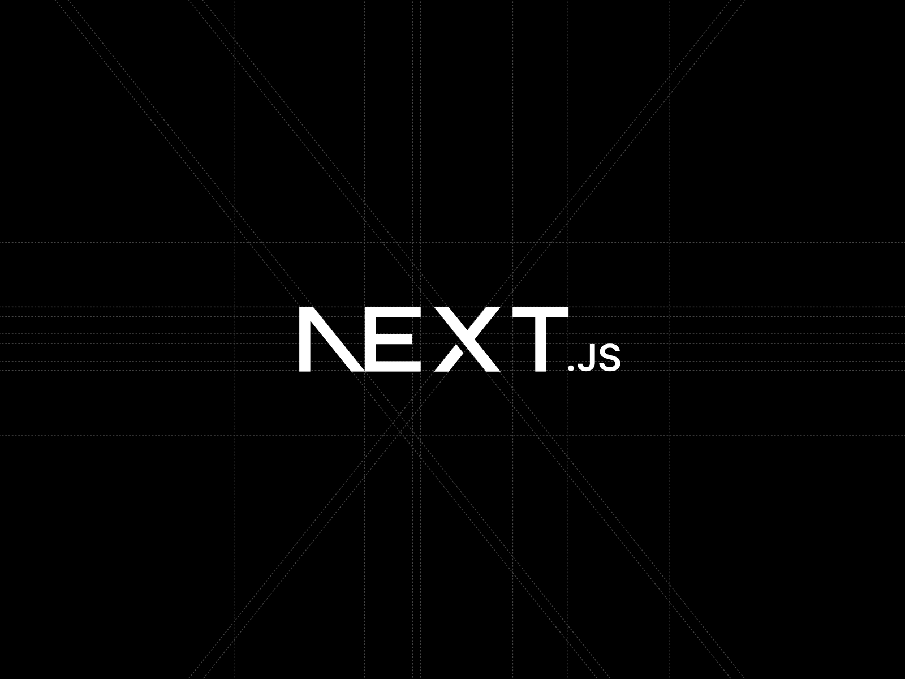
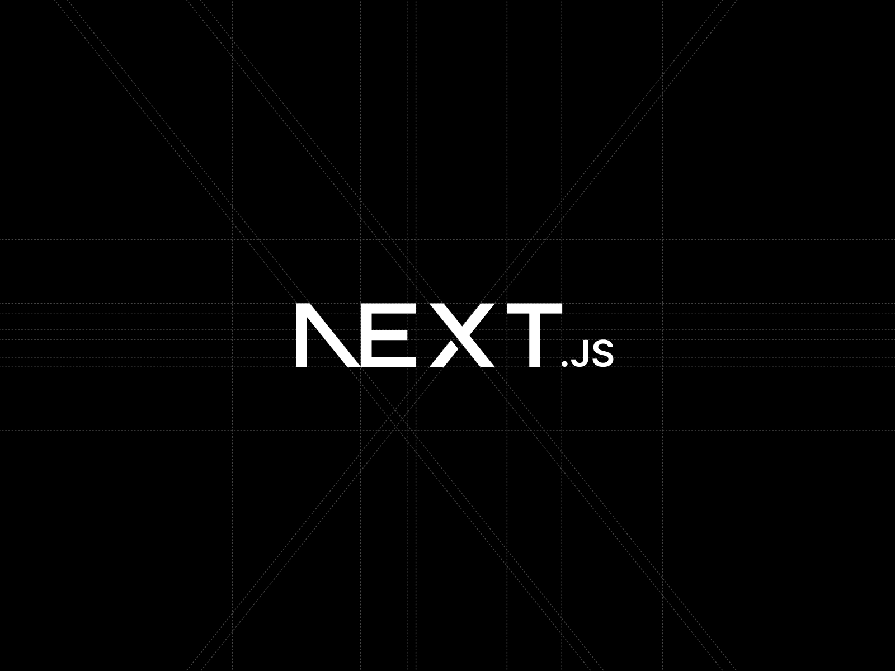

Hey I'm Edson
a web developer
Welcome to my personal portfolio website! Here, I aim to showcase my experience and skills as a programmer through concrete examples of successful projects I have worked on. Whether you are a potential employer, recruiter, or a tech industry professional, this website is designed to provide you with a comprehensive understanding of my abilities and expertise in the field of programming.
Here, I will give you a deeper insight into my background, skills, and experience as a programmer. Let me take this opportunity to introduce myself and share my passion for programming. I have always been fascinated by the world of technology and the power of coding to create innovative solutions. From a very young age I was attracted to computers and the infinite possibilities they offered. During my studies in Electrical Engineering I had a semester of programming and it was there that I developed this passion that has led me to pursue software development as a second career, with the aim of perfecting my skills and acquiring valuable experience.
Education and certifications: I am a 10th semester student of Electrical Engineering at the Santiago Mariño Polytechnic University Institute in Venezuela, and I am also a first-year Software Development student at BYU-Idaho in the USA. Over 3 years as a self-taught and university student studying the world of programming and web development, I have acquired a solid foundation in various programming languages, algorithms, and software development principles. Additionally, I have taken specialized courses and obtained certifications in areas such as web development, data analysis, and machine learning.


 
